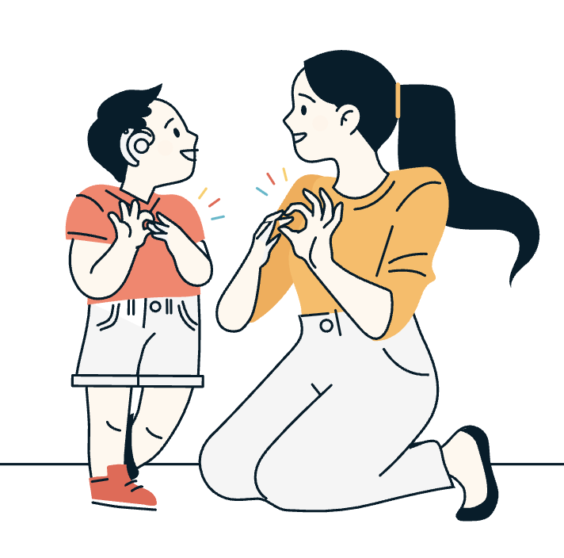

default_color = d3.schemeObservable10[0]
plt_color = color_var || default_color
all_vars = [...cont_vars, ...disc_vars]
channels = Object.fromEntries(all_vars.map(k => [k.name, k.name]))
viewof scatter = Plot.plot({
style: { fontFamily: "var(--sans-serif)" },
inset: 8,
grid: true,
x: { tickFormat: "" },
color: { legend: true },
marks: [
Plot.dot(d, {
x: x_var,
y: y_var,
stroke: plt_color,
tip: true,
channels: channels
}),
]
})
viewof x_hist = Plot.plot({
style: { fontFamily: "var(--sans-serif)" },
width: 640/2,
x: { tickFormat: "" },
y: { grid: true },
marks: [
Plot.rectY(d, Plot.binX({y: "count"}, {x: x_var, fill: plt_color})),
Plot.ruleY([0])
]
})
viewof y_hist = Plot.plot({
style: { fontFamily: "var(--sans-serif)" },
width: 640/2,
y: { grid: true },
marks: [
Plot.rectY(d, Plot.binX({y: "count"}, {x: y_var, fill: plt_color})),
Plot.ruleY([0])
]
})
html`<div style="display: flex; flex-wrap: wrap; align-items: flex-end;">
<div style="flex-basis: 25%"> ${viewof y_hist} </div>
<div style="flex-basis: 50%"> ${viewof scatter} </div>
<div style="flex-basis: 25%"> ${viewof x_hist} </div>
</div>`

Plot = import("https://esm.sh/@observablehq/plot@0.6.17")
d = transpose(data)
yaml = require("js-yaml")
config_file = FileAttachment("_config.yml").text()
config = yaml.load(config_file)
distinct_cutoff = 10
disc_types = (['string', 'boolean'])
disc_filter = (config?.categorical_vars)
? d => config.categorical_vars.includes(d.name)
: d => disc_types.includes(d.type) && d.numDistinct <= distinct_cutoff && d.numDistinct > 1
disc_vars = vars.filter(disc_filter)
disc_opts = new Map([['', null], ...disc_vars.map(d => [d.label ? d.label : d.name, d.name])])
cont_types = (['integer', 'float', 'date', 'datetime', 'time'])
cont_filter = (config?.numerical_vars)
? d => config.numerical_vars.includes(d.name)
: d => cont_types.includes(d.type) && d.numDistinct > distinct_cutoff
cont_vars = vars.filter(cont_filter)
cont_opts = new Map(cont_vars.map(d => [d.label ? d.label : d.name, d.name]))
x_val = config?.defaults?.x || cont_vars[0].name
y_val = config?.defaults?.y || cont_vars[1].name
color_val = config?.defaults?.color || disc_vars[0].name